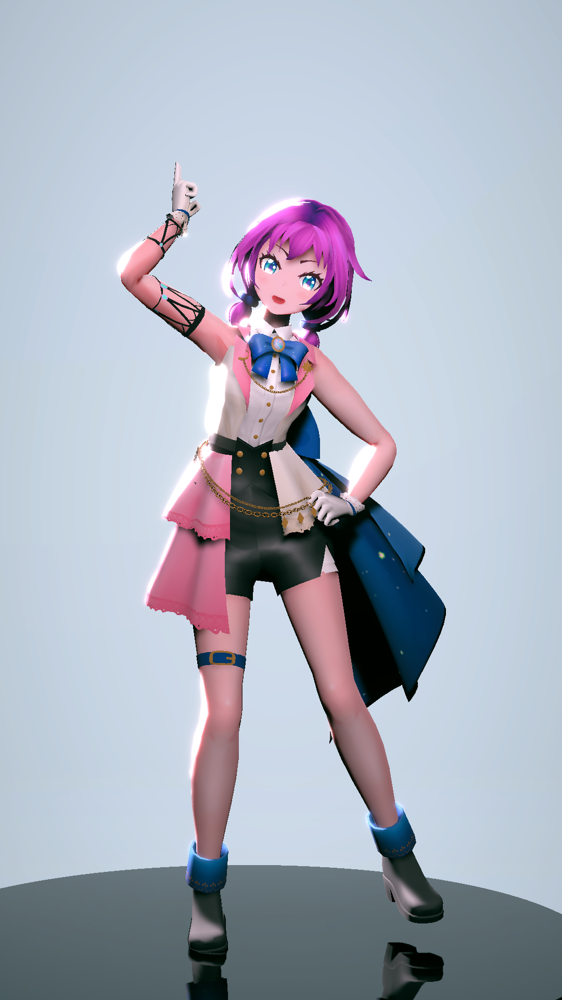
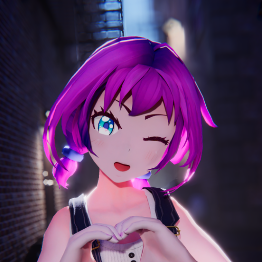

↓↓ショート動画生成↓↓

VRMファイルを使ってショート動画を出力できるWebアプリのリンクです
出力した動画はYouTubeやTikTok、その他SNSへの投稿にお使いください
動画出力の仕組み(VRM Shorts Generator)の作者は 若旦那 様
※VRM1.0は未対応です
※全てローカルでレンダリング処理を行って出力します
※Twitterへのアップロードに失敗する場合、別途動画編集ソフトで再出力してください。
※ハッシュタグ #VRMShortsGenerator をつけて投稿してくれると喜びます
↓↓モーション配布↓↓

Unityで使えるダンスモーションをBoothにて配布・販売しています
人気のダンスモーションをピックアップして紹介
配布形式は.anim .fbx .vmd .bvh .vrmaの5種類
※.anim形式のみの商品もあります、詳しくは商品説明をお読みください
※初心者向けの使い方はこちらの記事で解説しています